An agent is a computer system situated in an environment, which is able to autonomously act in the environment to meet its delegated objectives;
1.1.2 Agent and Object
- Agents are autonomous;
- Agents are smart;
- Agents are active;
1.1.3 Agent and Expert System
- Expert System typically focus on a special domain;
- Agent is situated in an environment;
1.1.4 Agent and AI
- Agent is not designed to solve all the problems of AI;
- Fully Observable: Complete, accurate, up-to-date information about the environment can be obtained;
- Partially Observable: Complete information is inaccessible;
- Deterministic: Action has a single guaranteed effect;
- Non-deterministic: Action may cause an uncertain effect.
- Static: The environment will not be changed before the agent act;
- Dynamic: The environment may be changed before the agent act.
- Discrete: Agent has finite actions in the environment;
- continuous: Agent has infinite actions in the environment;
- Episodic: Agent's current decision will not affect its future decision
- Non-Episodic: Agent's current decision will affect its future decision;
- Real Time: Time will affect the evaluation of an agent's performance;
- A reactive system keeps on interacting with the environment, and responds to changes occurred;
- A proactive system takes an initiative goal, and decides action through both of the goal and events;
- Ability to interact with other agents by cooperation, coordination, and negotiation.
- cooperation: working together as a team to achieve a shared goal.
- Coordination: managing the interdependencies between activities.
- Negotiation: reaching agreements on common interest.
Mobility, Rationality, Veracity, Benevolence, Learning/adaption;
- Definition: Expected utility is the expected value of an agent to obtain in an environment;
- 计算公式: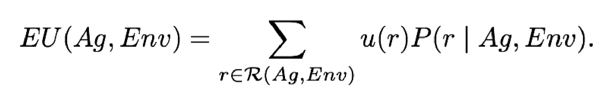
- Calculation: multiply the value to the agent of each possible outcome of the action by the probability of that outcome occurring and then summing those numbers;
- Optional Agent: The optimal agent in an environment is the agent with maximal expected utility;
- Example: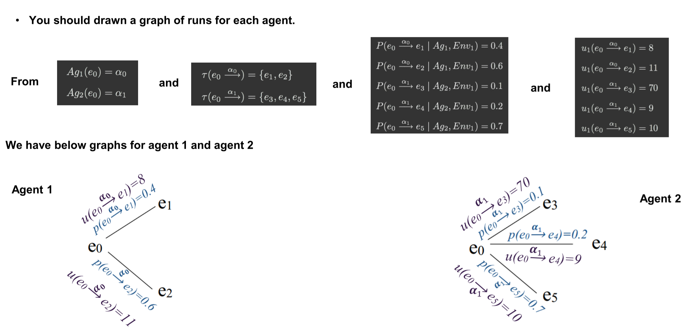
- Definition: A special case of assigning utilities to histories is to assign 0 (false) or 1 (true) to a run.
- How to: If a run is assigned 1, then the agent succeeds on that run, otherwise it fails.
1.5.3 Achievement and Maintenance Tasks
- An achievement task is specified by a set G of “good” or “goal” states: G ⊆ E;
- The agent succeeds if it is guaranteed to bring about at least one of these states
- A maintenance goal is specified by a set B of “bad” states B ⊆ E.
- The agent succeeds in a particular environment if it manages to avoid all states in B
Practical reasoning is reasoning directed towards actions basing on agent's desires, values and believes;
- Deliberation:
- what state of affairs we want to achieve;
- Outputs: intentions.
- Means-ends reasoning:
- how to achieve these states of affairs;
- outputs: plans.
- On(x,y): Object X on the top of object y;
- OnTable(x): Object X is on the table;
- Clear(x): Noting is on the top of object x;
- Holding(x): arm is holding x;
- Stack(x, y): Place an object on the top of another object;
- Unstack(x, y): Pick an object up from the top of another object;
- Pickup(x): Pick up an object from the table;
- Putdown(x): Putdown an object to the table;
- preconditions 𝑃𝛼𝑖 ,
- delete list 𝐷𝛼𝑖,
- add list 𝐴𝛼𝑖;
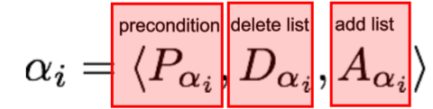
- B0 is the set of initial beliefs;
- Ac is the set of actions (changes the beliefs);
- I is a goal (or intention);
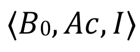
- 定义: a sequence of actions
- 可接受的Plan: A plan is said to be acceptable if and only if, each action will have true pre-condition;
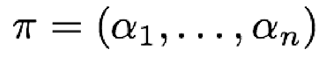
- see(): Observe the environment to generate percepts about it;
- brf(): the belief revision function (From percepts to believes)
- Options(): Generate all possible intentions;
- filter(): decide the final intention;
- sound(): check if the original plan is a correct for current Believes and intentions;
- plan(): Use mean-ends reasoning to produce a plan for the intention;
- execute(): Execute each action in a plan;
- succeeded(): Agent believes that the intention has achieved;
- impossible(): Agent believes that the intention is achievable;
- reconsider(): Agent believes that the intention need to be reconsidered (Optional);
A strategies profile is in Nash equilibrium if all players cannot deviate to obtain a higher payoff.
- The outcomes (C, D) and (D, C) are pure strategy Nash equilibria.
- Because, if Player 1 does action_C, the best action for player 2 is action_D.
- Similarly, ...
- Winner is the one with the largest number of points.
- Tactical Voting: Voter may vote a candidate who is not true preference profile.
- Condorcet’s Paradox: no matter which outcome we choose, most voters will be unhappy with the outcome
- Reduce a general election to a series of pairwise elections.
- Anomalies: fix an agenda using a majority graph for a special candidate to win;
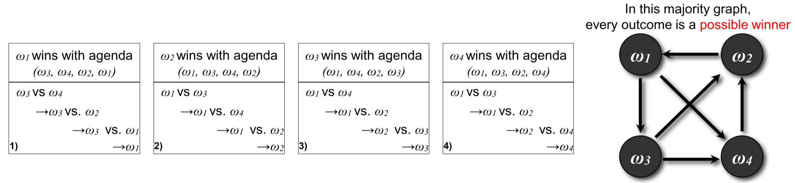
- Condorcet Winner: winner for every possible agenda;
- Calculates the Borda Count for each candidate, the winner is the candidate with the highest value;
- Counting proceeds in rounds, remove the last place candidate until there is only single candidate remained.
- Winner is the candidate with minimal cost to be Condorcet Winner;
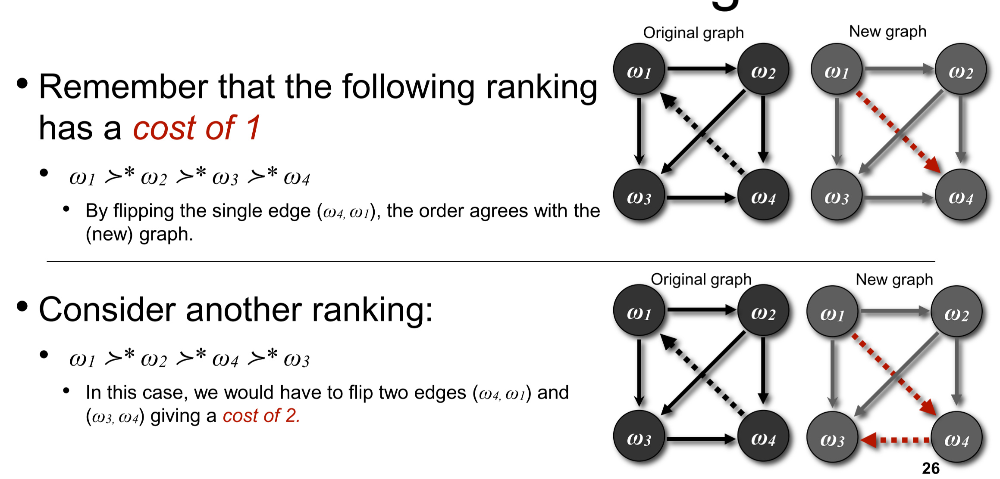
A set of agents C rejects an outcome of the grand coalition when there is another outcome for C in which all members of C obtain better benefits.
the core of a grand coalition is a set of outcomes (< 𝑥1,…, 𝑥𝑛 >) in which each of them follows: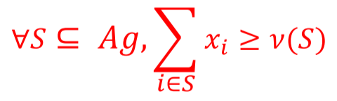;
5.3 Shapley Axiom and Value
- Symmetry: Agents that make the same contribution should get the same payoff;
- Dummy Player: Agents that make not synergy should get what they can earn on own.
- Additivity: If games are combined, the value an agent gets should be the sum of the utility of each individual game.
The Shapley value of an agent is the average amount of its expected contribution to a coalition.
- Formal Function: 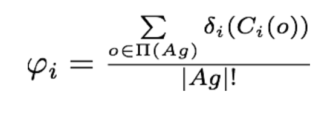.
- Induced Subgraph: 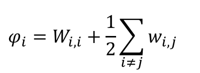.
- Marginal Contribution Nets: 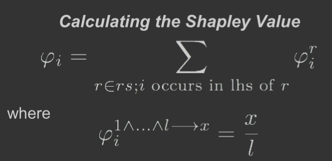.
- Induced Subgraph:
- Represent 𝜈 as an undirected graph;
- 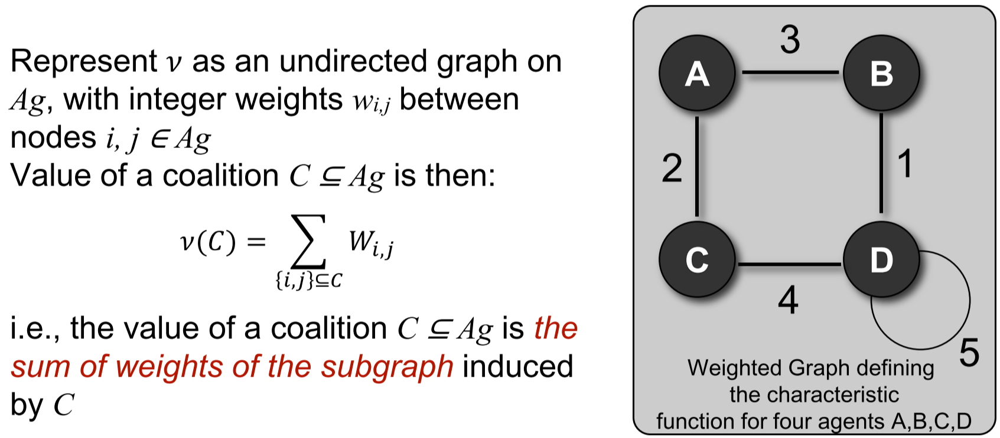.
- Marginal Contribution Nets:
- Represent 𝜈 as a set of rules;
- 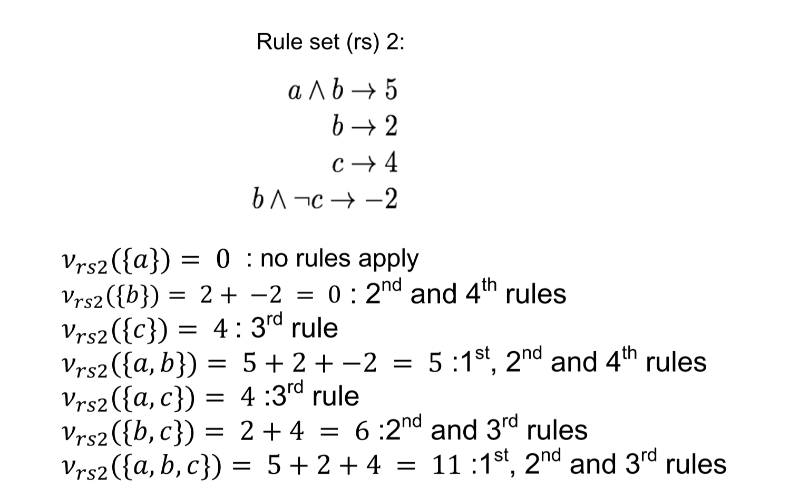.
- A position S is conflict-free if no member of S attacks another member of S.
- A position S is mutually defensive if every element of S, that is attacked, is defended by some element of S.
- A position that is conflict-free and mutually defensive is admissible.
A position S is a preferred extension if S is admissible and no superset of S is admissible.
- An argument is sceptically accepted if it is a member of every preferred extension
- An argument is credulously accepted if it is a member of at least one preferred extension
A grounded extension is the least questionable position.
- Arguments are guaranteed to be acceptable if they aren’t attacked.
- Arguments attacked by those that are in are therefore unacceptable